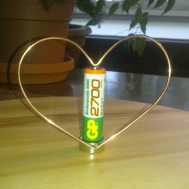
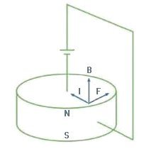
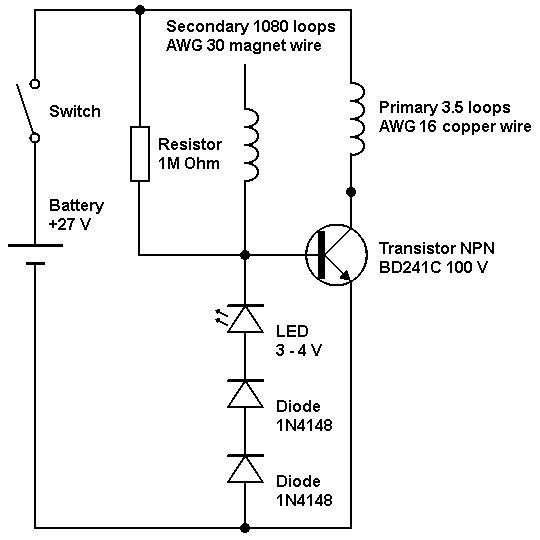
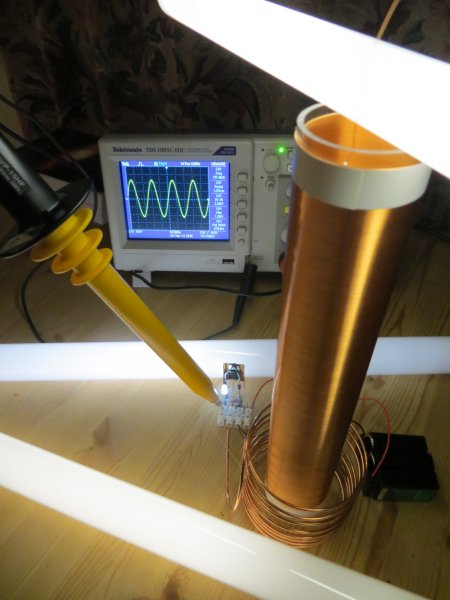

Homopolar motor discovered by Michael Faraday 1821
{kind=link}

Experiments with simple homopolar motor demonstrated rotational directions produced by electric and magnetic fields.
When battery's positive pole and permanent magnet's geomagnetic North pole are upwards, conductor rotates counter-clockwise when observed from the top.
| Battery (pole on top) | + | + | - | - |
| Magnet (pole on top) | North | South | North | South |
| Conductor (rotation) | CCW | CW | CW | CCW |

The rotation of the conductor can be explained by the Lorentz force. (1) Note that in the drawing magnetic poles are defined as in electrical theory and the magnet is rotating instead of the conductor.
However, there is an alternative explanation that is worth exploring. According to John Bedini (2009) zero-point vacuum energy enters the magnet at Bloch wall and creates the magnetic fields. He sees the magnetic fields as a sort of figure eight, where particles of magnetic flux are flowing in and out the magnet in a perpetual state. These particles are also spinning. Bedini says this motor proves that the magnetic fields are actually rotating because there is no switching action on the motor. (2)
Wireless Light
{kind=link}

The experimental setup includes an electrical circuit for generating alternate currents of high voltage and high frequency.
There appears to be a short, pulse-like amplification of light intensity at the instant of switch closure. At voltages under 25 V (with 10 MΩ resistor), the circuit may have to be jump-started by short-circuiting the transistor's collector to its base/emitter with a quick tap.
At higher voltages, the intensity of light and lighting up distance increase, but at the same time the transistor gets very hot. The performance of the circuit seems to get better by adding a couple of switching diodes (for example 1N4001 or 1N4148).
After the first successful tuning (added a couple of diodes and changed the resistor to 10kΩ) there is no need to jump-start the circuit. The transistor still heats up at higher voltages, but within reasonable limits. The system is exciting and there is a lot to experiment and learn.
Thanks to Lidmotor and Michael Judd for the inspiring YouTube videos.
"I have made the discovery that an electrical current of an excessively small period and very high potential may be utilized economically and practicably to great advantage for the production of light."
Nikola Tesla 1891, System of Electric Lighting Patent.
According to George Trinkaus (1989) the primary and the secondary coils should be wound in the same direction. The primary coil has a role in the fine tuning the tesla coil. "One old rule of thumb says the primary and the secondary should have equal weights of copper." (3)
Although the experimental system is not exactly tesla coil, the same fine tuning methods seems to apply. The new primary coil has 8 loops of 2.15 mm diameter (~AWG 12) copper wire. The coil height and diameter is 80 mm. The fluorescent tubes generate soft light, and during low voltage operation, the tubes produce magical looking flows of varying light intensity.
{kind=link}

Here is a sample measurement made with TESTEC High Voltage Probe (HVP 15HF) connected to Tektronix TDS 1001C-EDU digital oscilloscope.
According to measurement (from the base of the transistor) the voltage coming from the batteries is converted to 830 kHz AC with peak to peak voltage about 3.2 kV. The whole system goes into excited state. The working frequency of the circuit varies with the load and the measurement style. The frequency goes down by some tens of kilohertz by adding more lights or tilting the probe closer to the coils.
In the picture, the system is lighting three fluorescent tubes with soft light. The amount of light is still to be measured with a light meter.
(September 20, 2012)
{kind=link}
Wireless Light 2.0
One of the tuning options mentioned before is Tesla's quarter wave principle. Tesla stated the rule: "In order to attain best results it is essential that the length of each wire or circuit, from ground connection to the top, should be equal to one-quarter of the electrical vibration in the wire, or else equal to that length multiplied by an odd number." (4)
The secondary coil is now tuned to 1.125 MHz quarter wave resonance. It has 421 loops of AWG 30 enameled copper wire (calculated length 66.62 m). The primary coil has 3 loops AWG 12 bare copper wire (measured length 1.04 m).
With these coils and 8 fluorescent lights (120W) as a load, the measured working frequency of the circuit is 1.2 MHz with peak to peak voltage about 1.1 kV. The system gives impressive results, even though the circuit is not yet precisely tuned.
In the system, there are some sweets spots for lighting; one of them is shown in the picture.
(September 28, 2012)
{kind=link}
Wireless Light 3.0
Here is a resonant transformer where the primary coil is inside the secondary coil. The driving circuit is the same as in previous experiments. With seven fluorescent lights (105 W) as a load, the measured working frequency of the system is 960 kHz with peak to peak voltage about 1.1 kV.
The inspiration came from Tesla's receiver coil picture, from which I measured the coil diameter to be in golden ratio to its height. To accomplish that with around 1 MHz quarter wave resonant wire length and reasonable amount of loops in the secondary coil, I wound 244 loops of AWG 30 copper wire on a 99 mm diameter glass tube. The primary coil has only two loops, and it is made of two AWG 12 copper wires twisted helically together.
There is much to develop, for example, the batteries drain fast. Nevertheless, there is a potential advance for the fluorescent lighting technology.
(October 3, 2012)
{kind=link}
Wi-Li 1 (Wireless Light installation 1)
This was supposed to be developed as my first science art installation. Unfortunately the radio broadcasting laws and regulations won't allow it, since the system operates at frequencies that are already taken by many official operators. The purpose was to research and design a wideband signal source for different lights such as fluorescent tubes and LEDs, and build wondrous light installations.
In the picture is a high voltage, high frequency air-core transformer that resonates around 920 kHz. The signal has many harmonics up to 8 MHz. The operating voltage is about 2 kV and the power consumption is under 15 watts (measured at 24V NiMH battery pack). This experiment lighted up five 15 watt fluorescent tubes (1/3 of the lights). In the test circuit board there are two circuits in parallel; another one is for additional transformer. On the left hand side, there are a couple of transformers from previous experiments for studying the effects of different top loads.
Although the project is put on the shelf, it has been a fun and interesting learning experience. For example the connectors in the light structure are 3D printed from ABS plastic. As a 3D modeling software I used Moment of Inspiration. It's a very useful software for 3D printing. To get started (free 30-day trial) I recommend the introductory videos by Tom Meeks.
(October 3, 2013)
References
(1) Wikipedia. Homopolar motor. Retrieved October 12, 2011, from http://en.wikipedia.org/wiki/Homopolar_motor
(2) Craddock, Anthony J. 2009. Energy from the Vacuum part 12 - Petrovoltaics and the Faraday motor.
(3) Trinkaus, George. 1989. Tesla Coil (3rd edition). United States of America: High Voltage Press.
(4) Trinkaus, George. 1993. Radio Tesla - the secret of Tesla's radio and wireless power. United States of America: High Voltage Press.
Figures
Lorentz force. Retrieved and modified October 12, 2011 from http://scitation.aip.org/journals/doc/PHTEAH-ft/vol_42/iss_9/553_1-F2.jpg